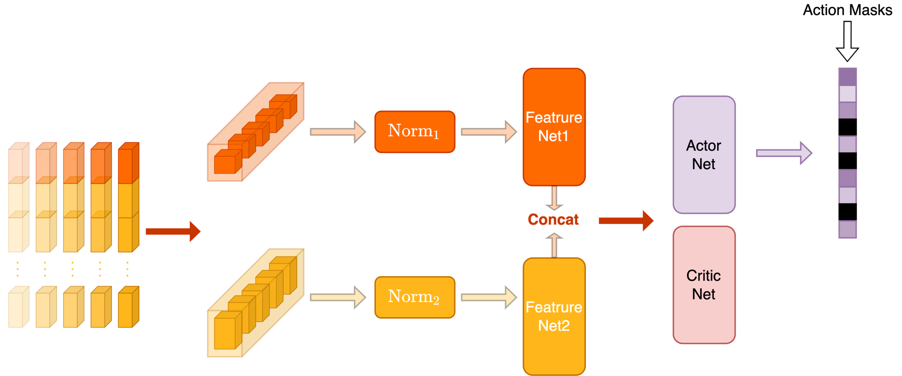
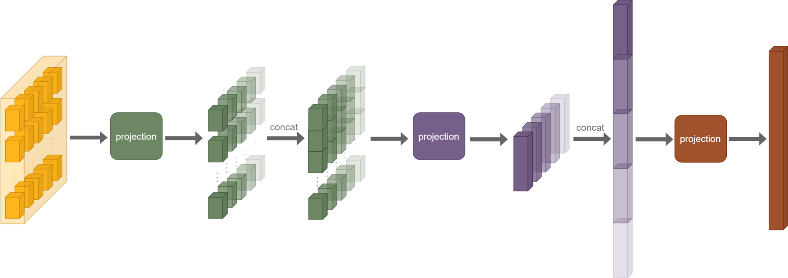
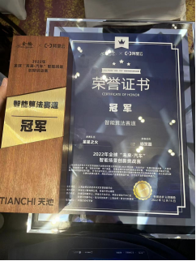

融合强化学习与 PD 控制的高速自动驾驶
阿里云天池大赛 - 2022年全球“未来汽车”智能场景创新挑战赛算法赛道
冠军（1/1497）· 队长
作为“星星之火”团队队长，带队参加高速自动驾驶仿真算法赛。方案结合 Categorical PPO、动态奖励引导与 PD 控制，在复杂交通流中完成避障、超车和换道，并改善变道后的行驶稳定性。
赛事由上海金桥与阿里云、阿里巴巴达摩院等共同组织。算法赛道有清华大学、南洋理工大学、华中科技大学等高校队伍参与。赛事方答辩合集 ↗
代表性效果
技术方案与个人贡献
赛题基于达摩院仿真平台，面向他车并线、事故绕行、低速车辆绕行等高速驾驶场景，考察车辆在动态交通环境中的决策与控制能力。
- Categorical PPO：将加速度与转向角分别离散为 11 个取值，组成 121 个联合动作；采用 GAE、价值与优势归一化，并在策略更新的 KL 散度过大时提前停止更新。
- 状态与特征：结合车辆自身状态、周边障碍物状态及历史信息，通过特征网络融合后输入 Actor / Critic，并使用动作掩码约束输出。
- 平衡轨迹损失：针对训练后期失败轨迹占比降低的问题，调整成功与失败轨迹对学习的影响，使策略继续利用失败经验。
- 动态奖励引导：先学习避障与到达目标，再逐步提高规则项奖励权重，引导策略学习更稳定的驾驶行为。
- 强化学习与 PD 混合控制：强化学习处理避让和换道，PD 控制改善直道与变道后的稳定性，并用规则处理紧急制动。

特征网络结构

分场景仿真案例
不同交通场景下的避障、超车与行驶稳定性表现。
竞赛成果与相关材料
